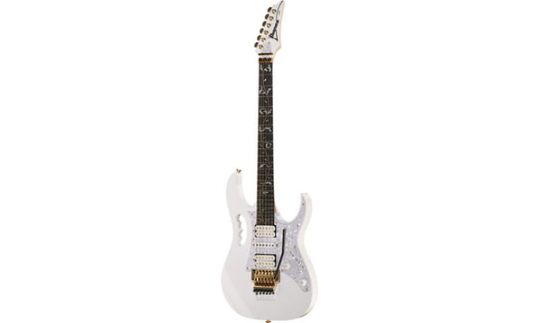
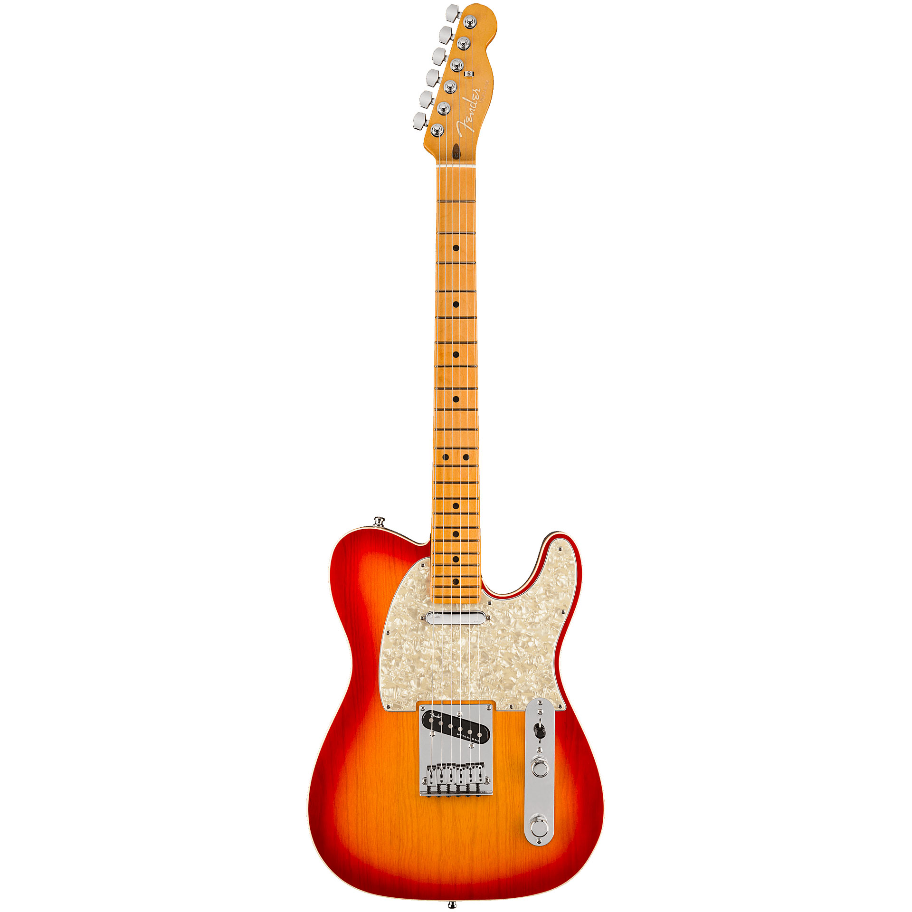
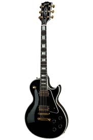

Ibanez JEM7V-WH(1000 ευρώ)

Χαρακτηριστικά
Steve Vai signature model
Alder body
5-Stripe maple / walnut neck
Fretboard: Rosewood (Dalbergia latifolia)
JEM Prestige neck profile
24 Frets
Pearl / Abalone "Tree of Life" fretboard inlays
Pickup: 2 Di Marzio Evolution humbuckers and 1 Di Marzio Evolution single coil
Edge tremolo
Gold-plated hardware
Colour: White
Case included
Περιγραφή Προϊόντος
Η Ibanez JEM7V-WH είναι η κιθάρα που έχει δημιουργήσει η Ibanez για τον διάσημο κιθαρίστα Steve Vai.Το εν λόγω όργανο αναπαράγει εξαιρετικό ήχο με την χρήση των κατάλληλων πεταλιών καθώς και διατηρεί το κούρδισμα της όσο και να χρησιμοποιηθεί το τρέμολο.
Fender AM Ultra Tele MN PRB(2000 ευρώ)

Χαρακτηριστικά
Body: Ash
Bolt-on neck: Maple
Fretboard: Maple
Neck profile: Modern D
Black pearloid dot fretboard inlays
Compound fretboard radius: 254 to 355.6 mm (10" - 14")
Scale: 648 mm (25.51")
Nut width: 42.8 mm (1.69")
Bone nut
22 Medium jumbo frets
Pickup: 2 Ultra Noiseless Vintage Tele single coils
Master volume control with S-1 switch and master tone control
3-Way toggle switch
4-Ply aged white pearloid pickguard
6-saddle American Tele bridge with chrome-plated brass saddles
Deluxe cast / sealed locking machine heads
Nickel / chrome hardware
Colour: Plasma Red Burst
Περιγραφή Προϊόντος
Η Fender AM Ultra Tele MN PRB είναι ένα χαρακτηριστικό προιόν της Fender, όντας T model κιθάρα.Έχει ιδιαίτερο ήχο σε κάθε είδος μουσικής και αποτελεί μία πολυ καλή επιλογή για όποιον παίζει πολλά διαφορετικά είδη μουσικής.
Gibson Les Paul Custom EB GH(3000 ευρώ)

Χαρακτηριστικά
Body: Mahogany (Swietenia macrophylla)
Arched top: Maple
Neck: Mahogany
Fretboard: Ebony (Diospyros classiforia)
Neck profile: Custom 'C'
Long neck tenon
Inlays: Mother-of-pearl block
22 Frets
Scale: 628 mm
5-Ply binding
Headstock inlay: Spit diamond
Pickups: Gibson 490R (neck) and 498T (bridge) humbuckers
Tune-O-Matic bridge and stop tail
Hardware; Gold-plated
Colour: Black
Περιγραφή Προϊόντος
H Gibson Les Paul Custom EB GH είναι ένα πραγματικό κόσμημα όσον αφορά τα υλικά κατασκευής του.Με το mahogany body, το ebony fretboard και το maple top η κιθάρα προσφέρει ευελιξία και άνεση στον τρόπο παιξίματος.Επίσης, οι επιχρυσομένες λεπτομέρειες το κάνουν να ξεχωρίζει σε σχέση με τα άλλα όργανα.Το μόνο σίγουρο είναι ότι όποιος αγοράσει αυτή την κιθάρα θα μείνει παραπάνω από ευχαριστημένος και θα έχει φοβερά αποτελέσματα σε blues, rock, hard rock και alternative μουσική.